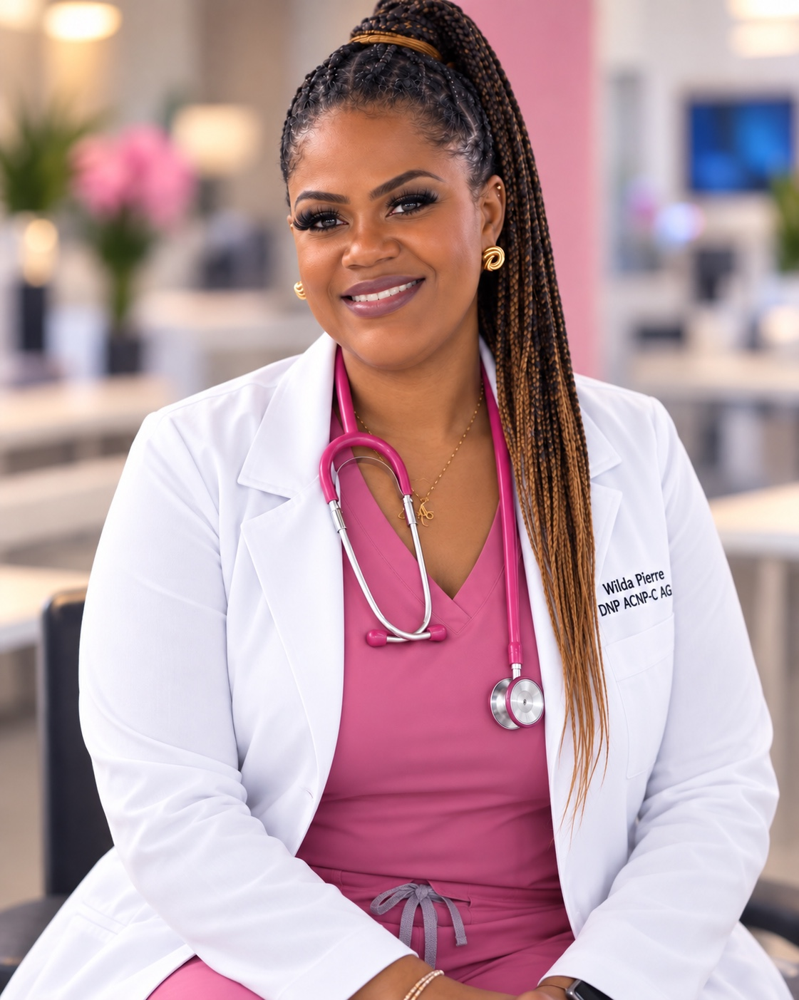

Teach.
Equip current and future nurses with knowledge, clinical reasoning, and practical skills.
COMPASSION MEETS CLINICAL EXCELLENCE
Dr. Wilda Pierre DNP, APRN, ACNPC-AG
Adult-Gerontology Acute Care Nurse Practitioner
Clinical Educator · Nursing Faculty · Speaker · Mentor
Helping nurses find their confidence, strengthen their clinical judgment, and become the professionals they are called to be.
MIAMI, FLORIDA • VIRTUAL CONNECTIONS, TOO

Students ✦ Nurses ✦ Educators ✦ Healthcare organizations
01 / THE PERSON BEHIND THE PRACTICE
For Dr. Pierre, nursing begins with seeing the person in front of you—and believing in what they can become.
Her Haitian roots and deep connection to community shape the way she cares, teaches, and leads. Compassion, faith, and service are part of the purpose she brings to her work: helping people feel seen, supported, and capable of taking their next step.
Dr. Wilda Pierre, DNP, APRN, ACNPC-AG, is an advanced practice registered nurse, clinical educator, and nursing faculty member. Her journey has taken her from acute care nursing to clinical leadership, nursing education, and advanced practice, with experience in emergency, medical-surgical, critical care, orthopedic, geriatric, and nephrology settings.
She brings that experience into every learning relationship, helping nurses connect what they know with how they care. Whether a student is preparing for the NCLEX or a nurse is finding their footing in practice, Dr. Pierre’s focus is the same: stronger clinical judgment, greater confidence, and compassionate nursing practice.
Explore her education & experienceEquip current and future nurses with knowledge, clinical reasoning, and practical skills.
Develop professionals ready to lead with competence, integrity, and purpose.
Keep compassionate, patient-centered care at the heart of nursing practice.
02 / EDUCATION THAT MOVES YOU FORWARD
From the first steps of nursing school to leading a team, find guidance grounded in practice and shaped around your goals.
Individualized and group support for clinical judgment, study planning, test-taking strategies, and exam readiness.
Build your study plan 02A supportive space to strengthen clinical reasoning, study strategies, confidence, and professional readiness.
Find your direction 03Learning experiences and workshops connecting evidence-based knowledge with clinical judgment and nursing practice.
Connect knowledge to care 04Clinical instruction, mentorship, and evaluation of clinical skills in accordance with program and clinical-site requirements.
Explore clinical learning 05Support for nurses and educators building leadership, communication, mentorship, and educational practice.
Grow as a leader 06Thoughtful conversations about nursing education, professional confidence, mentorship, and transition to practice.
Start a conversation03 / NCLEX PREPARATION
Dr. Pierre has demonstrated success in supporting nursing students preparing for and successfully passing the NCLEX examination.
She provides individualized and group-based preparation to help nursing graduates strengthen clinical knowledge, clinical judgment, test-taking strategies, and confidence.
Ask about NCLEX supportA THOUGHTFUL APPROACH TO READINESS
Identify knowledge gaps and create an individualized study plan.
Review nursing content, prioritization, and Next Generation NCLEX-style questions.
Develop test-taking strategies, accountability, and exam-readiness habits.
NCLEX preparation is educational. Individual results vary; participation does not guarantee examination success or licensure.
04 / CLINICAL EDUCATION & PRECEPTORSHIP
Clinical education and preceptorship services are subject to applicable academic-program, institutional, clinical-site, licensure, and regulatory requirements.
Dr. Pierre uses the nursing process as a framework for developing clinical judgment. Through instruction, mentorship, and skills validation, learners connect nursing knowledge to thoughtful, patient-centered practice.
Understand patient needs.
Identify nursing priorities.
Develop a plan of care.
Put nursing interventions into practice.
Reflect on outcomes and adjust.
The goal extends beyond clinical hours: stronger judgment, professional confidence, and readiness for nursing practice.
05 / SPEAKING & WORKSHOPS
Invite an educator who connects clinical experience with compassion, purpose, and the realities of nursing practice.
Available for nursing programs, healthcare organizations, conferences, professional-development programs, workshops, and nursing-student events.
Invite Dr. Pierre to speakCONVERSATIONS THAT MATTER
06 / A FOUNDATION OF EXPERIENCE
Dr. Pierre’s experience spans advanced practice, clinical education, and nursing faculty roles.
Nephrology Nurse Practitioner
Clinical Educator
Adjunct Nursing Instructor
Orthopedic Nurse Clinician
Registered Nurse
Capella University
Walden University
Capella University
Grand Canyon University
07 / LET’S TAKE THE NEXT STEP
Preparing for the NCLEX, seeking mentorship, or planning an educational event? Connect with Dr. Pierre to discuss what you need and what support could look like.
wildapierrednp@gmail.comExplore available appointment times, or send an inquiry with the service you’re interested in, your goals, and your preferred dates.
View scheduling options Prefer email? Send an inquiry →Scheduling opens in Calendly. Fees, availability, and engagement details are discussed directly.
The educational, mentoring, speaking, and professional-development content provided through this website is intended for educational purposes and does not constitute individualized medical advice, diagnosis, or treatment.
Clinical education and preceptorship services are subject to applicable academic-program, institutional, clinical-site, licensure, and regulatory requirements. NCLEX preparation services are educational in nature. Individual examination results vary, and participation does not guarantee successful completion of the NCLEX or professional licensure.
STAY CONNECTED
Beyond the classroom.
Follow Dr. Pierre’s official social profiles.